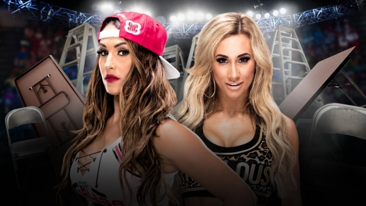

WWE TLC (SmackDown)
Results
BEAUTY AND THE MAN-BEAST (C) VS. BRAY WYATT AND RANDY ORTON (W)
Orton beat up Heath Slater outside the ring. Wyatt went into his spider walk, which freaked out Rhyno and distracted him long enough for Orton to slide back in and RKO him. After pinning Rhyno, there was some tension between Orton and Luke Harper. Wyatt and Orton then had Harper hold their belts while the three of them posed.
NIKKI BELLA VS. CARMELLA
Results: Nikki went ham spraying Carmella down with a fire extinguisher before finishing her off with the Rack Attack 2. She won and walked up the ramp. Afterwards, Carmella got up, grabbed the mic and swore that she didn't attack Nikki at Survivor Series. She claimed that it was really Natalya behind it. Nikki walked off, unsure at the claims.
THE MIZ (C) VS. DOLPH ZIGGLER
Ladder Match for the WWE Intercontinental Championship
Results: Miz had two ladders set up and after some brawling, Miz was knocked to the mat. With Ziggler's feet on each ladder, Miz was able to climb back up and kick Ziggler right in the crotch twice. He shoved him off the ladder, grabbed the belt, and retained. Afterwards, Miz sarcastically dedicated his win to Daniel Bryan and called Ziggler a loser. Ziggler laid immobile outside the ring as Miz and Maryse left together.
KALISTO VS. BARON CORBIN
Chairs Match
Results: Kalisto jumped off the top rope and got caught with a chair to the face. Corbin then used the End of Days to drop him onto a pile of chairs. That's all she wrote.
Afterwards, Corbin screamed at the commentators that that's what's going to happen to anyone that gets in his way.
BECKY LYNCH (C) VS. ALEXA BLISS
Tables Match for the WWE SmackDown Women’s Championship
Results: With a table set up on the outside of the ring and Becky standing on the apron, Alexa tripped up one of her legs, caught her, and powerbombed Becky through the table. After the match, Becky was interviewed on the spot. She was annoyed by this, blamed herself for the loss, and walked away sadly.
AJ STYLES (C) VS. DEAN AMBROSE
TLC Match for the WWE World Championship
Results: Towards the end, James Ellsworth walked out and AJ Styles attacked him. Ambrose took advantage, hit Dirty Deeds on the steel steps, and went for the ladder. As he climbed up, AJ tried to stop him, only to get kicked out of the ring. With Ambrose about to win the match, Ellsworth shoved the ladder over, forcing Ambrose out of the ring and through a table. He cheered for AJ to get back into the ring and climb up the ladder to win. Ellsworth celebrated AJ's win while Ambrose remained buried in table debris, looking hurt and disgruntled.